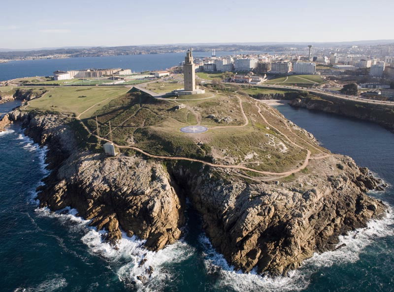

Lendas
A lenda do espello


Ficha rápida da lenda
- Nome: A lenda do espello
- Lugar: Torre de Hércules (A Coruña)
- Protagonistas: Hércules e o rei Hispán
- Que conta? A historia dun espello máxico que protexía a costa galega.
A lenda en si
Creo que todos coñecemos a lenda da Torre de Hércules, pero dentro dela escóndense moitas outras, como a do Trezenzonio ou a do Espello. Desta última é da que vos vou falar hoxe.
Conta a lenda que, despois de vencer a Xerión, Hércules levantou unha torre e que, tempo despois, o rei Hispán colocou na súa parte máis alta un enorme espello. Grazas a el podían vixiar todo o mar e descubrir con antelación a chegada de calquera barco.
Pero un día o espello rompeuse. Un grupo de xudeus que fuxía de Nabucodonosor chegou á costa agochando os seus barcos baixo ramas e follas para non ser descubertos. Unha vez conseguiron achegarse á torre, romperon o espello.
A lenda di que nos días claros o espello era capaz de ver ata as costas de Irlanda. Seguramente non sería así, pero gústame imaxinalo.
Bibliografía
De la mitología a las leyendas. (s. f.). Torre de Hércules.
https://www.torredeherculesacoruna.com/torre/es/descubrela/de-la-mitologia-a-las-leyendas?argIdioma=es